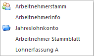

Über den Menüpunkt
1 Auswertung
1 Kontrolllisten
1 Service Entgelt Kontrollliste
kann eine Liste aller AN ausgegeben werden, wobei hier pro AN aufgelistet wird, ob und wie viel Service Entgelt zu leisten ist.
Einschränkungen
Ø Arbeitnehmer von - bis
Hier kann auf die AN-Nummer eingeschränkt werden, für die die Auswertung durchgeführt werden soll. Wie die AN-Nummer eingegeben werden kann, dazu gibt es mehrere Möglichkeiten. Details dazu entnehmen Sie bitte dem Kapitel Aufruf einer AN-Nummer. Wird in den Feldern von - bis ein AN eingetragen, so wird daneben der Name des AN angezeigt, wobei der Name unterstrichen dargestellt wird. Durch einen Klick auf den AN wird standardmäßig der AN-Stamm aufgerufen. Über die rechte Maustaste kann aber individuell eingestellt werden, welche Aktion ausgelöst werden soll. Dabei stehen folgende Optionen zur Verfügung:

ü Arbeitnehmerstamm
Es wird der
AN-Stamm aufgerufen, wobei gleich der Datensatz des angezeigten AN angezeigt
wird.
ü Arbeitnehmerinfo
Es wird die
Arbeitnehmerinfo im Programm WinLine INFO geöffnet.
ü Jahreslohnkonto
Es wird das
Steuerfenster für das Jahreslohnkonto aufgerufen, wo der ausgewählte AN gleich
vorgeschlagen wird. Die Ausgabe muss nur mehr durchgeführt werden.
ü Arbeitnehmer Stammblatt
Es wird
das Steuerfenster für das Arbeitnehmer Stammblatt aufgerufen, wo der ausgewählte
AN gleich vorgeschlagen wird. Die Ausgabe muss nur mehr durchgeführt werden.
ü Lohnerfassung A
Es wird die
Einzelabrechnung aufgerufen, wobei gleich alle Daten des ausgewählten AN
abgerufen werden. Bei diesen Punkt ist darauf zu achten, dass ggf. die
automatischen Lohnarten abgearbeitet werden.
Die zuletzt getätigte Einstellung wird als Standard übernommen, d.h. wenn das nächste Mal nur auf den AN-Namen geklickt wird, dann wird die letzte Aktion automatisch durchgeführt. Diese Einstellung wird pro Benutzer gespeichert.
Ø Auswertejahr
Aus der Auswahllistbox kann das Jahr ausgewählt werden, für das die Auswertung durchgeführt werden soll. Es können alle Jahre ausgewählt werden, für die Abrechnungen vorhanden sind.
Ø Inaktive
Durch Aktivieren dieser Checkbox werden auch die AN ausgegeben, die auf Inaktiv gesetzt wurden. Standardmäßig ist diese Option nicht gesetzte, d.h. die Liste wird immer ohne Inaktive ausgegeben.
Zusätzlich dazu gibt es noch die Möglichkeit, über den Filter weitere Selektionen (z.B. auf die Krankenkasse oder auf den Betrieb) durchzuführen.
Durch einen Klick auf den Button "Ausgabe auf Bildschirm" bzw. "Ausgabe auf Drucker" wird die Auswertung gestartet.
Als Ergebnis wird eine Liste mit allen AN gemäß der Einschränkung ausgegeben, wobei folgende Informationen angedruckt werden:
Ø AN-Nummer und AN-Name
Durch einen Klick auf die AN-Nummer kann der AN-Stamm geöffnet werden, wo dann ggf. die Einstellungen überprüft bzw. geändert werden können.
Ø Hinweis zum AN
Wenn für den AN kein Service-Entgelt gerechnet wird oder die Abrechnung nicht durchgeführt ist, dann wird hier ein entsprechender Hinweis ausgegeben, wobei es folgende Unterscheidungen gibt:
ü Beitragsgruppe ist nicht KV
pflichtig
In dem Fall ist beim AN eine Beitragsgruppe hinterlegt, die nicht
KV-pflichtig ist. Das ist dann der Fall, wenn der AN z.B. ein geringfügig
Beschäftigter oder ein Lehrling ist.
ü AN zum Stichtag nicht
beschäftigt
In diesem Fall ist beim AN ein Eintrittsdatum nach dem Stichtag
oder ein Austrittsdatum vor dem Stichtag eingetragen, wobei hier immer das
SV-rechtliche Austrittsdatum geprüft wird.
ü AN ist auf "nicht abrechnen"
gesetzt.
In dem Fall wird nur der Hinweis ausgegeben, dass der AN auf Nicht
abrechnen gesetzt ist. Dies dient nur zum Hinweis, wenn der AN nicht abgerechnet
ist.
ü Es ist keine Beitragsgruppe
eingetragen
In dem Fall ist beim AN gar keine Beitragsgruppe eingetragen,
somit ist er auch nicht KV-pflichtig und somit muss auch kein Service Entgelt
bezahlt werden.
ü Freier DN ohne ASVG
In dem Fall
handelt es sich um einen freien Dienstnehmer ohne SV-Pflicht - auch hier ist
kein Service Entgelt vom DG einzubehalten.
Ø Anzahl der Service Entgelte
Anzahl der Personen, für die Service Entgelt berechnet wird.
Ø Betrag Service Entgelt
Hier wird die Summer des Service Entgelts ausgewiesen, wie es vom Programm berechnet wurde. Der Betrag kann in der Abrechnung noch verändert werden.
Ø Abgerechnet
Hier wird angezeigt, ob der AN im November des Auswertejahres bereits abgerechnet wurde. Im Abrechnungsmonat November gelangt man durch einen Klick auf Ja/Nein direkt in die Abrechnung des entsprechenden AN. In allen anderen Abrechnungsmonaten kann das "Abgerechnet"-Kennzeichen nicht angeklickt werden.
ü Betrag
Hier wird der Betrag
angezeigt, der in der Novemberabrechnung als Service Entgelt abgerechnet
wurde.
ü Angehörige des AN (die im AN-Stamm eingetragen sind) mit Verwandtschaftsverhältnis und Hinweis, ob für den Angehörigen ein Service Entgelt berücksichtigt wird oder nicht.
Berechnung des Service Entgelts
Die Berechnung des Service Entgelts erfolgt nach folgenden Regeln:
ü Wenn der AN Geringfügig ist, wird kein Service Entgelt ermittelt.
ü Wenn das Eintrittsdatum nach dem 15.11. oder das Austrittsdatum (SV-rechtlich) vor dem 15.11. liegt, dann wird das Service Entgelt nicht berechnet (das Inaktiv-Kennzeichen wird in dem Fall nicht berücksichtigt).
ü Wenn beim AN eine Beitragsgruppe hinterlegt ist, wird - sofern diese Beitragsgruppe die Krankenversicherungsbeiträge enthält - für den AN und seine Angehörigen (bei denen keine KSG-Befreiung eingetragen ist) das Service Entgelt berechnet.
ü Bei einem AN mit Werksvertrag wird zusätzlich auf die Option " 8:sonstige Leistungen, die im Rahmen eines freien Dienstvertrages erbracht werden und der Versicherungspflicht gemäß § 4 Abs. 4 ASVG unterliegen" geprüft - nur wenn auch diese Option eingestellt ist, wird für den AN
Für alle zutreffenden AN und Angehörigen werden jeweils € 10,- Service Entgelt berechnet und auf der Liste angeführt. Mit der gleichen Logik wird auch das Service Entgelt im Abrechnungsmonat 11 ermittelt und in den Abrechnungsparametern eingetragen. Eine manuelle Änderung des automatischen Vorschlages in der Einzelabrechnung ist aber jederzeit möglich.
Ø Ausgabe Button
Aus der Auswahllistbox kann gewählt werden, ob die Ausgabe am Bildschirm oder am Drucker durchgeführt werden soll. Standardmäßig wird die Ausgabe auf Bildschirm vorgeschlagen, die auch durch Drücken der F5-Taste gestartet werden kann.
Durch Drücken der ESC-Taste wird das Fenster geschlossen.